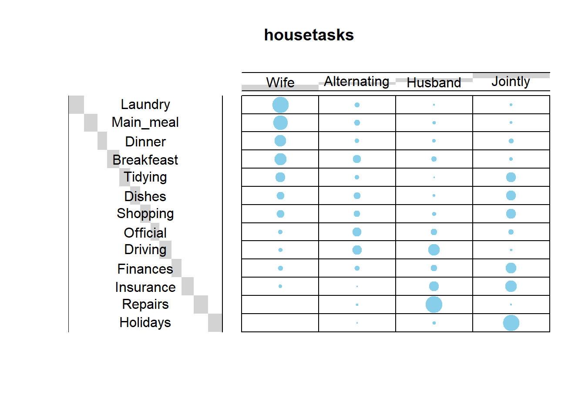
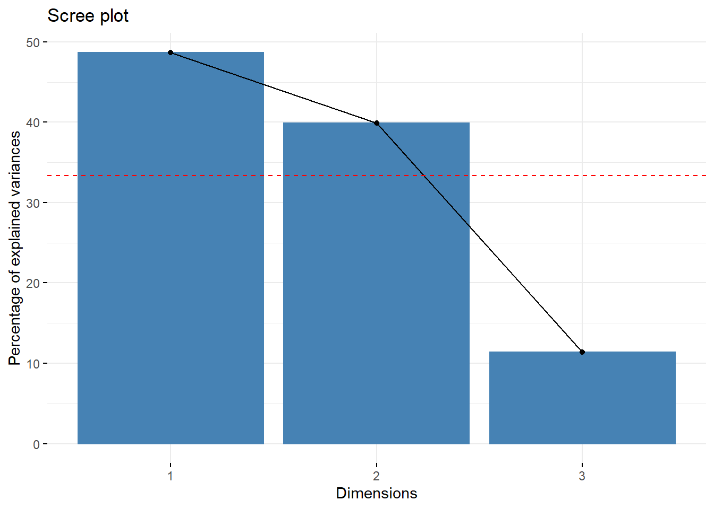
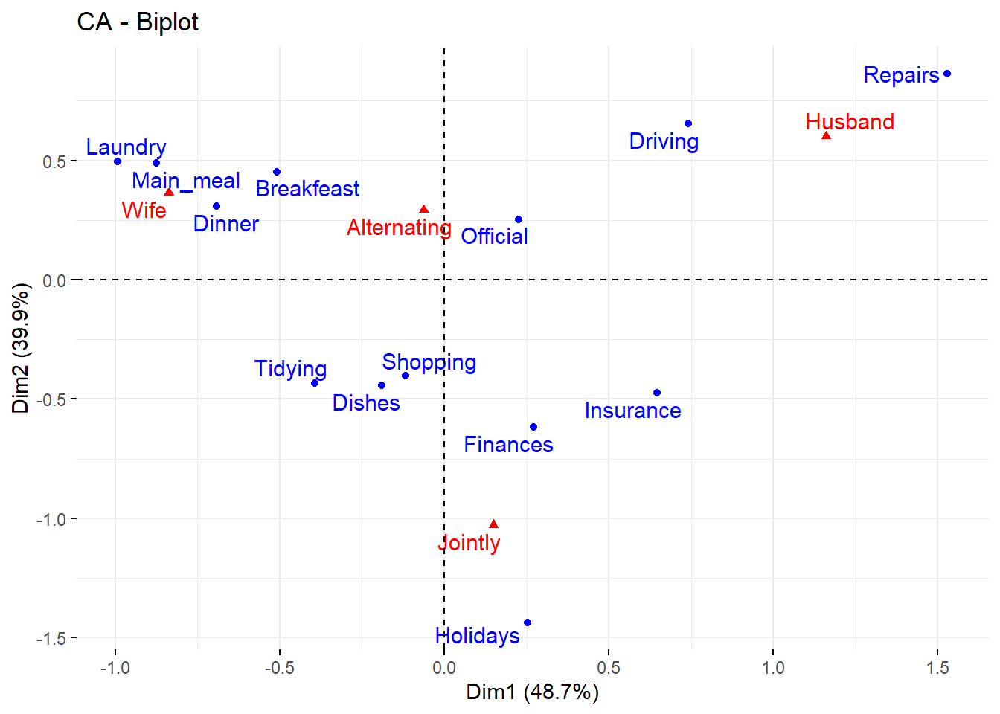
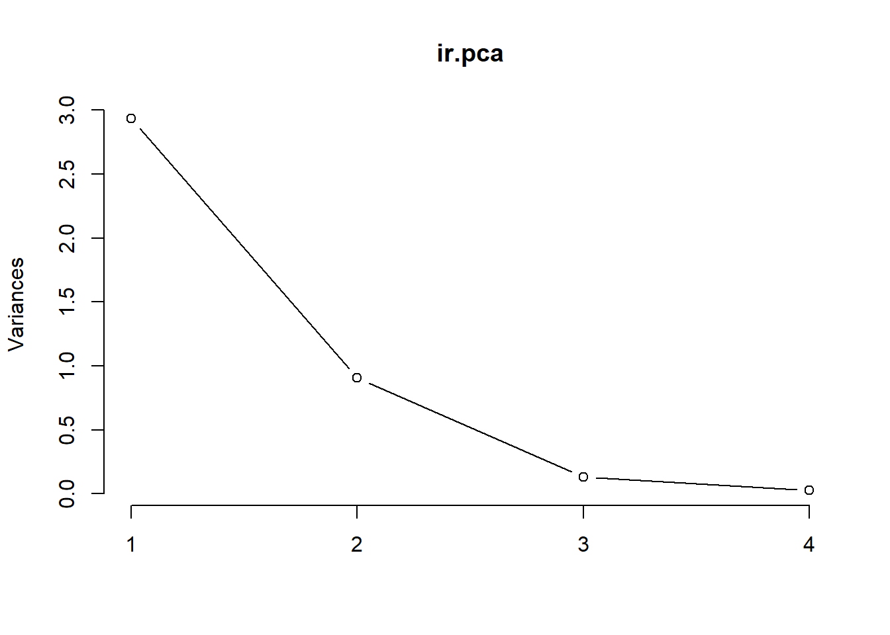
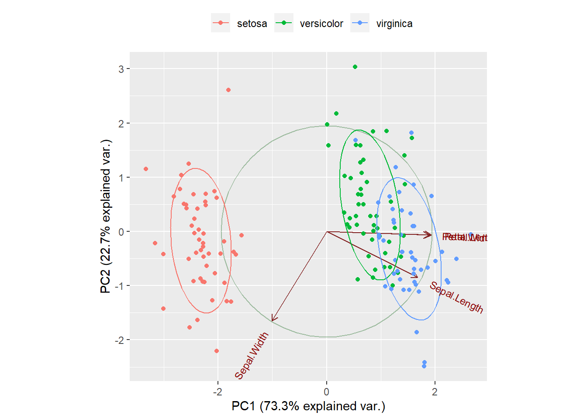

Classification
UQ SLC Digital Team
2019-08-13

1 Introduction
This tutorial introduces classification using “R”. The entire code for the sections below can be downloaded here. Classification methods are used to find groups or patterns in data or to predict group membership. As such, they are widely used and applied in machine learning. For linguists classification is not only common when it comes to phylogenetics but also in annotation-based procedures such as part-of-speech tagging and syntactic parsing.
2 Preparation and session set up
As all caluculations and visualizations in this tutorial rely on “R”, it is necessary to install “R”, “RStudio”, and “Tinn-R”. If these programms (or, in the case of “R”, environments) are not already installed on your machine, please search for them in your favorite search engine and add the term “download”. Open any of the first few links and follow the installation instructions (they are easy to follow, do not require any specifications, and are pretty much self-explanatory).
In addition, certain “libraries” or “packages” need to be installed so that the scripts shown below are executed without errors. Before turning to the code below, please install the libraries by running the code below this paragraph. If you have already installed the libraries mentioned below, then you can skip ahead ignore this section. To install the necessary libraries, simply run the following code - it may take some time (between 1 and 5 minutes to install all of the libraries so you do not need to worry if it takes some time).
# clean current workspace
rm(list=ls(all=T))
# set options
options(stringsAsFactors = F) # no automatic data transformation
options("scipen" = 100, "digits" = 4) # supress math annotation
# install libraries
install.packages(c("cluster", "factoextra", "cluster",
"seriation", "pvclust", "ape", "vcd",
"exact2x2", "factoextra", "seriation",
"NbClust", "pvclust"))Once you have installed “R”, “R-Studio”, “Tinn-R”, and have also initiated the session by executing the code shown above, you are good to go.
3 Cluster Analysis
The most common method in linguistics that is sued to detect groups in data are cluster analyses. Cluster analyses are common in linguistics because they not only detect commonalities based on the frequency or occurrence of featutres but they also allow to visualize when splits between groups have occurred and are thus the method of choice in historical linguistics to determine and show genealogical relationships.
3.1 Underlying Concepts
The next section focuses on the basic idea that underlies all cluster analyses. WE will have a look at some very basic examples to highlight and discuss the principles that cluster analyses rely on.
The underlying idea of cluster analysis is very simple and rather intuitive as we ourselves perform cluster analyses everyday in our our lives. This is so because we group things together under certain lables and into concepts. The first example to exemplyfy this deals with types of trees and how we group these types of trees based on their outward appearance.
Imagine you see six trees representing different types of trees: a pine tree, a fir tree, an oak tree, a beech tree, a phoenix palm tree, and a nikau palm tree. Now, you were asked to group these trees accroing to similarity. Have a look at the plot below and see whether you would have come up with a similar type of grouping.

An alternative way to group the trees would be the follwoing.

In this display, conifers and broad-leaf trees are grouped together because their are more similar to each other compared to palm trees. This poses the question of what is meant by similarity. Consider the display below.

Are the red and the blue line more similar because they have the same shape or are the red and the black line more similar becaus etheir are closer together? Ther is no single correct answer here. Rather the plot indends to raise awarness about the fact that how cluster analyses group data depends on how similarity is defined in the respective algorithm.
Let’s consider another example to better understand how cluster analyses determine which data points should be merged when. Imagine you have five students adn want to group them togehter based on their overall performance in school. The data that you rely on are their grades in math, music, and biology (with 1 being the best grade and 6 being the worst).
| Math | Music | Biology | |
|---|---|---|---|
| StudentA | 2 | 3 | 2 |
| StudentB | 1 | 3 | 2 |
| StudentC | 1 | 2 | 1 |
| StudentD | 2 | 4 | 4 |
| StudentE | 3 | 4 | 3 |
The first step in determining the similarity among students is to create a distance matrix.
diststudents <- dist(students, method = "manhattan") # create a distance matrixThe distance matrix below shows that Student A and Student B only differ by one grade. Student B and Student C differ by 2 grades. Student A and Student C differ by 3 grades and so on.
| StudentA | StudentB | StudentC | StudentD | |
|---|---|---|---|---|
| StudentB | 1 | |||
| StudentC | 3 | 2 | ||
| StudentD | 3 | 4 | 6 | |
| StudentE | 3 | 4 | 6 | 2 |
Based on this distance matrix, we can now implement a cluster analysis in R.
3.2 Cluster Analysis: Numeric Data
To create a simple cluster object in R, we use the hclust function from the cluster package. The resulting object is then plotted to create a dentrogram which shows how students have been amalgamated (combined) by the clustering algorithm (which, in the present case, is called “ward.D”).
library("cluster") # activate library
clusterstudents <- hclust( # hierarchical cluster object
diststudents, # use data diststudents
method="ward.D") # ward.D as linkage method
plot(clusterstudents, # plot result as dendrogram
hang = 0) # labels at split
Let us have a look at how the clustering algorythm has amalgamated the students. The amalgamation process takes the distance matrix from above as a starting point and, in a first step, has merged Student A and Student B (because they were the most similar students in the data based on the distance matrix). After colapsing Student A and Stdent B, the resulting distance matrix looks like the distance matrix below (notice that Student A and Student B now form a cluster that is represented by the means of the grades of the two students).
students2 <- matrix(c(1.5, 3, 2, 1, 2, 1, 2, 4, 4, 3, 4, 3),
nrow = 4, byrow = T)
students2 <- as.data.frame(students2)
rownames(students2) <- c("Cluster1", "StudentC", "StudentD", "StudentE")
diststudents2 <- dist(students2, method = "manhattan")| Cluster 1 | Student C | Student D | |
|---|---|---|---|
| Student C | 2.5 | ||
| Student D | 3.5 | 6.0 | |
| Student E | 3.5 | 6.0 | 2.0 |
The next lowest distnce now is 2.0 between Student D and Student E which means that these two students are merged next. The resulting distance matrix is shown below.
students3 <- matrix(c(1.5,3,2,1,2,1,2.5,4,3.5),
nrow = 3, byrow = T)
students3 <- as.data.frame(students3)
rownames(students3) <- c("Cluster1", "StudentC", "Cluster2")
diststudents3 <- dist(students3,
method = "manhattan")| Cluster 1 | Student C | |
|---|---|---|
| Student C | 2.5 | |
| Cluster 2 | 3.5 | 6.0 |
Now, the lowest distance value occurs between Cluster 1 and Stundent C. Thus, Student Cand Cluster 1 are merged. In the final step, the Cluster 2 is merged with the new cluster encompassing Student C and Cluster 1. This amalgamtion process can then be displayed visually as a dendrogram (see above).
How and which elements are merged depends on the what is understood as distance. Since “distance” is such an important concept in cluster analyses, we will briefly discuss this notion to undertsand why there are so many different types of clustering algorithms and ths cluster analyses.
3.2.1 Distances
To understand how a cluster analysis determines to which cluster a given data point belongs, we need to understand what different distance measures represent. Have a look at the Figure below which visually represents three different ways to conceptualize distance.
par(mar=c(1,1,1,1)) # define margine width of the plot
x <- c(1,5) # define an x value
y <- c(1,5) # define a y value
plot(x, y,
pch = 20,
cex = 1,
axes = F,
las = 1,
xlab = "",
ylab = "",
xlim = c(0,7),
ylim = c(0,10))
text(0.5, .5, "Point A", cex = 1)
text(5, 5.5, "Point B", cex = 1)
lines(x = c(1, 5), y = c(1, 5), type = "l", lty = 3, lwd = 2, col = "red")
lines(x = c(1, 5), y = c(1, 1), type = "l", lty = 2, lwd = 2, col = "blue")
lines(x = c(5, 5), y = c(1, 5), type = "l", lty = 4, lwd = 2, col = "green")
lines(x = c(.9, 5), y = c(.9, .9), type = "l", lty = 4, lwd = 2, col = "green")
legend("topleft", inset=.05, title="", bty = "n", lty = c(3, 2, 4), lwd = 2,
c("euclidean distance", "maximum distance", "manhatten distance"), col=c("red", "blue", "green"), horiz=F, cex = 1)
par(mar=c(5.1,4.1,4.1,2.1))The Figure above depicts three ways to measure distance: the “eucledian distance” represents the distance between points as the hypothenuse of the x- and y-axis distances while the “maximum distance” represents distance as the longer distance of either the distance on the x- or the y-axis. The manhatten distance (or block distance) is the sum of the distances on the x- and the y-axis.
We will now turn to another example in order to delve a little deeper into how clustering algorithms work. In this example, we will find cluster of varieties of English based on the relative frequency of selected non-standard features (such as the relative freqeuncies of cleaft constructions and tag questions). As a frist setp, we generate some fictional data set for this analysis.
# generate data
IrishEnglish <- round(sqrt((rnorm(10, 9.5, .5))^2), 3)
ScottishEnglish <- round(sqrt((rnorm(10, 9.3, .4))^2), 3)
BritishEnglish <- round(sqrt((rnorm(10, 6.4, .7))^2), 3)
AustralianEnglish <- round(sqrt((rnorm(10, 6.6, .5))^2), 3)
NewZealandEnglish <- round(sqrt((rnorm(10, 6.5, .4))^2), 3)
AmericanEnglish <- round(sqrt((rnorm(10, 4.6, .8))^2), 3)
CanadianEnglish <- round(sqrt((rnorm(10, 4.5, .7))^2), 3)
JamaicanEnglish <- round(sqrt((rnorm(10, 1.4, .2))^2), 3)
PhillipineEnglish <- round(sqrt((rnorm(10, 1.5, .4))^2), 3)
IndianEnglish <- round(sqrt((rnorm(10, 1.3, .5))^2), 3)
clus <- data.frame(IrishEnglish, ScottishEnglish, BritishEnglish,
AustralianEnglish, NewZealandEnglish, AmericanEnglish,
CanadianEnglish, JamaicanEnglish, PhillipineEnglish, IndianEnglish)
# add row names
rownames(clus) <- c("nae_neg", "like", "clefts", "tags", "youse", "soitwas", "dt", "nsr", "invartag", "wh_cleft")
summary(clus) # inspect results## IrishEnglish ScottishEnglish BritishEnglish AustralianEnglish
## Min. : 8.657 Min. : 8.732 Min. :5.207 Min. :5.417
## 1st Qu.: 9.066 1st Qu.: 9.297 1st Qu.:5.889 1st Qu.:6.212
## Median : 9.527 Median : 9.422 Median :6.214 Median :6.308
## Mean : 9.489 Mean : 9.474 Mean :6.379 Mean :6.337
## 3rd Qu.: 9.748 3rd Qu.: 9.589 3rd Qu.:6.902 3rd Qu.:6.598
## Max. :10.623 Max. :10.205 Max. :7.761 Max. :6.947
## NewZealandEnglish AmericanEnglish CanadianEnglish JamaicanEnglish
## Min. :5.548 Min. :3.414 Min. :2.406 Min. :0.980
## 1st Qu.:6.210 1st Qu.:3.851 1st Qu.:3.651 1st Qu.:1.266
## Median :6.551 Median :4.274 Median :4.231 Median :1.404
## Mean :6.375 Mean :4.458 Mean :4.151 Mean :1.399
## 3rd Qu.:6.615 3rd Qu.:4.665 3rd Qu.:4.624 3rd Qu.:1.546
## Max. :6.939 Max. :6.227 Max. :5.323 Max. :1.772
## PhillipineEnglish IndianEnglish
## Min. :1.323 Min. :0.5530
## 1st Qu.:1.549 1st Qu.:0.9815
## Median :1.778 Median :1.2725
## Mean :1.736 Mean :1.2968
## 3rd Qu.:1.911 3rd Qu.:1.6818
## Max. :2.112 Max. :1.9010As a next step, we cerate a cluster object based on the data we have just generated.
# clean data
clust <- t(clus) # transpose data
clust <- na.omit(clust) # remove missing values
clusts <- scale(clust) # standardize variables
clusts <- as.matrix(clusts) # convert into matrix
clust## nae_neg like clefts tags youse soitwas dt nsr
## IrishEnglish 9.566 9.487 8.983 8.912 9.923 8.657 9.632 9.786
## ScottishEnglish 9.611 9.525 10.205 9.433 9.293 8.732 9.932 9.292
## BritishEnglish 6.126 5.968 5.687 5.207 6.302 5.863 6.504 7.034
## AustralianEnglish 6.304 6.947 6.190 5.417 6.677 6.311 6.189 6.279
## NewZealandEnglish 5.548 5.714 6.557 6.545 6.599 6.191 6.939 6.775
## AmericanEnglish 3.751 4.559 4.336 4.213 4.701 5.548 3.414 4.150
## CanadianEnglish 5.323 3.627 3.612 2.406 4.464 4.514 4.661 3.997
## JamaicanEnglish 1.262 1.573 0.980 1.364 1.444 1.772 1.533 1.226
## PhillipineEnglish 1.933 2.112 1.825 1.690 1.502 2.074 1.323 1.844
## IndianEnglish 0.787 1.001 0.975 1.887 1.704 1.164 1.901 1.615
## invartag wh_cleft
## IrishEnglish 10.623 9.316
## ScottishEnglish 9.310 9.411
## BritishEnglish 7.336 7.761
## AustralianEnglish 6.362 6.698
## NewZealandEnglish 6.267 6.620
## AmericanEnglish 3.680 6.227
## CanadianEnglish 5.184 3.721
## JamaicanEnglish 1.551 1.280
## PhillipineEnglish 1.324 1.730
## IndianEnglish 1.381 0.553We now assess if data is clusterable by testing whether or not the data includes nonrandom structures. To means to determine whether the data contains nonrandomness, we calculate the Hopkins statistic which informs how similar the data is to a random distribution. If the values of the Hopkins statistic are higher than 0.5 then this indicates that the data is random and that there are no inherent clusters. However, if the Hopkins statistic is close to 0, then the data is clusterable. The n in the get_clust_tendency functions represents the maximum number of clusters to be tested whcih should be number of predictors in the data.
library("factoextra") # load library to extract cluster tendency
clusttendency <- get_clust_tendency(clusts, # apply get_clust_tendency to cluster object
n = 9, # define number of points from sampe speace
gradient = list(low = "steelblue", # define color for low values
high = "white")) # define color for high values
clusttendency[1]## $hopkins_stat
## [1] 0.2491981As the Hopkins statistic above shows, there is sufficient structure in the data and we can assume that there are actual clusters in the data. Next, we create a distance matrix based on eucleadian distances.
clustd <- dist(clusts, # create distance matrix
method = "euclidean") # use eucledian (!) distance
round(clustd, 2) # display distance matrix## IrishEnglish ScottishEnglish BritishEnglish
## ScottishEnglish 0.64
## BritishEnglish 3.26 3.32
## AustralianEnglish 3.25 3.26 0.66
## NewZealandEnglish 3.23 3.20 0.77
## AmericanEnglish 5.23 5.20 2.15
## CanadianEnglish 5.50 5.54 2.41
## JamaicanEnglish 8.26 8.26 5.10
## PhillipineEnglish 7.93 7.91 4.77
## IndianEnglish 8.38 8.37 5.24
## AustralianEnglish NewZealandEnglish AmericanEnglish
## ScottishEnglish
## BritishEnglish
## AustralianEnglish
## NewZealandEnglish 0.68
## AmericanEnglish 2.05 2.14
## CanadianEnglish 2.38 2.52 1.37
## JamaicanEnglish 5.06 5.11 3.26
## PhillipineEnglish 4.71 4.77 2.90
## IndianEnglish 5.20 5.21 3.45
## CanadianEnglish JamaicanEnglish PhillipineEnglish
## ScottishEnglish
## BritishEnglish
## AustralianEnglish
## NewZealandEnglish
## AmericanEnglish
## CanadianEnglish
## JamaicanEnglish 2.91
## PhillipineEnglish 2.62 0.49
## IndianEnglish 3.08 0.48 0.79Below are other methods to cerate distance matrices.
# create distance matrix (eucledian method: not good when dealing with many dimensions)
clustd <- dist(clusts, method = "euclidean")
# create distance matrix (maximum method: here the difference between points dominates)
clustd_maximum <- round(dist(clusts, method = "maximum"), 2)
# create distance matrix (manhattan method: most popular choice)
clustd_manhatten <- round(dist(clusts, method = "manhattan"), 2)
# create distance matrix (canberra method: for count data only - focuses on small differences and neglects larger differences)
clustd_canberra <- round(dist(clusts, method = "canberra"), 2)
# create distance matrix (binary method: for binary data only!)
clustd_binary <- round(dist(clusts, method = "binary"), 2)
# create distance matrix (minkowski method: is not a true distance measure)
clustd_minkowski <- round(dist(clusts, method = "minkowski"), 2)
# distance method for words: daisy (other possible distances are "manhattan" and "gower")
library(cluster)
clustd_daisy <- round(daisy(clusts, metric = "euclidean"), 2) If you call the individual distance matrices, you will see that depending on which distance measure is used, the distance matrices differ dramatically! Have alook at the distance matrix created using the manhatten metric and compare it to the distance matrix created using the eucledian metric (see above).
clustd_maximum ## IrishEnglish ScottishEnglish BritishEnglish
## ScottishEnglish 0.40
## BritishEnglish 1.26 1.44
## AustralianEnglish 1.29 1.36 0.32
## NewZealandEnglish 1.32 1.30 0.45
## AmericanEnglish 2.10 2.05 1.11
## CanadianEnglish 2.21 2.39 1.23
## JamaicanEnglish 2.76 2.88 1.97
## PhillipineEnglish 2.81 2.71 1.83
## IndianEnglish 2.80 2.89 2.19
## AustralianEnglish NewZealandEnglish AmericanEnglish
## ScottishEnglish
## BritishEnglish
## AustralianEnglish
## NewZealandEnglish 0.40
## AmericanEnglish 0.87 1.11
## CanadianEnglish 1.09 1.41 0.76
## JamaicanEnglish 1.76 1.78 1.50
## PhillipineEnglish 1.68 1.77 1.37
## IndianEnglish 1.95 1.87 1.72
## CanadianEnglish JamaicanEnglish PhillipineEnglish
## ScottishEnglish
## BritishEnglish
## AustralianEnglish
## NewZealandEnglish
## AmericanEnglish
## CanadianEnglish
## JamaicanEnglish 1.30
## PhillipineEnglish 1.17 0.26
## IndianEnglish 1.45 0.23 0.37Next, we create a distance plot using the distplot function. If the distance plot shows different regions (non random, non uniform grey areas) then clustering the data is permitable as the data contains actual structures.
library(seriation)
dissplot(clustd) # create distance plot
cd <- hclust(clustd, # create cluster object
method="ward.D2") # ward.D2 linkage (minimum variance)
plot(cd, hang = -1) # display dendogram
Other linkage methods.
# single linkage: cluster with nearest data point
cd_single <- hclust(clustd, method="single")
# create cluster object (ward.D linkage)
cd_wardd <- hclust(clustd, method="ward.D")
# create cluster object (ward.D2 linkage):
# cluster in a way to achieve minimum variance
cd_wardd2 <- hclust(clustd, method="ward.D2")
# average linkage: cluster with closest mean
cd_average <- hclust(clustd, method="average")
# mcquitty linkage
cd_mcquitty <- hclust(clustd, method="mcquitty")
# median linkage: cluster with closest median
cd_median <- hclust(clustd, method="median")
# centroid linkage: cluster with closest prototypical point of target cluster
cd_centroid <- hclust(clustd, method="centroid")
# complete linkage: cluster with nearest/furthest data point of target cluster
cd_complete <- hclust(clustd, method="complete") Now, we determine the optimal number of clusters based on silhouette widths which shows the ratio of internal similarity of clusters against the similarity between clusters. If the silhuette widths have values lower than .2 then this indicates that clustering is not appropriate ((Levshina 2015) 311). The function below displays the silhouette width values of 2 to 8 clusters.
optclus <- sapply(2:8, function(x) summary(silhouette(cutree(cd, k = x), clustd))$avg.width)
optclus # inspect results## [1] 0.5498244 0.6537919 0.6882543 0.5985924 0.4158267 0.2195046 0.2020694optnclust <- which(optclus == max(optclus)) # determine optimal number of clusters
groups <- cutree(cd, k=optnclust) # cut tree into optimal number of clustersThe optimal number of clusters is the cluster solution with the highest silhouette width. We cut the tree into the optimal number of clusters and plot the result.
groups <- cutree(cd, k=optnclust) # cut tree into optimal clusters
plot(cd, hang = -1, cex = .75) # plot result as dendrogram
rect.hclust(cd, k=optnclust, border="red") # draw red borders around clusters
In a next step, we aim to determine which factors are particularly important for the clustering - this step is soemwhat comparable to measuring the effect size in inferential designs.
# which factors are particularly important
celtic <- clusts[c(1,2),]
others <- clusts[-c(1,2),]
# calculate column means
celtic.cm <- colMeans(celtic)
others.cm <- colMeans(others)
# calcualte difference between celtic and other englishes
diff <- celtic.cm - others.cm
sort(diff, decreasing = F)## wh_cleft soitwas nsr invartag youse dt clefts like
## 1.530686 1.675524 1.742124 1.762687 1.766385 1.804296 1.821153 1.822933
## nae_neg tags
## 1.824098 1.896891plot( # start plot
sort(diff), # y-values
1:length(diff), # x-values
type= "n", # plot type (empty)
cex.axis = .75, # axis font size
cex.lab = .75, # label font size
xlab ="Prototypical for Non-Celtic Varieties (Cluster 2) <-----> Prototypical for Celtic Varieties (Cluster 1)", # x-axis label
yaxt = "n", # no y-axis tick marks
ylab = "") # no y-axis label
text(sort(diff), 1:length(diff), names(sort(diff)), cex = .75) # plot text into plot
Outer <- clusts[c(6:8),] # data of outer circle varieties
Inner <- clusts[-c(6:8),] # data of inner circle varieties
Outer.cm <- colMeans(Outer) # column means for outer circle
Inner.cm <- colMeans(Inner) # column means for inner circle
diff <- Outer.cm - Inner.cm # difference between inner and outer circle
sort(diff, decreasing = F) # order difference between inner and outer circle## tags nsr dt clefts like youse
## -0.9935590 -0.9523073 -0.9006768 -0.8751450 -0.8410198 -0.8008619
## invartag nae_neg wh_cleft soitwas
## -0.7903622 -0.7192220 -0.6894647 -0.6032866plot( # start plot
sort(diff), # y-values
1:length(diff), # x-values
type= "n", # plot type (empty)
cex.axis = .75, # axis font size
cex.lab = .75, # label font size
xlab ="Prototypical for Inner Circle Varieties (Cluster 2) <-----> Prototypical for Outer Circle Varieties (Cluster 1)", # x-axis label
yaxt = "n", # no y-axis tick marks
ylab = "") # no y-axis label
text(sort(diff), 1:length(diff), names(sort(diff)), cex = .75) # plot text into plot
We see that discourse like and and the frequency of like is typical for other varieties and that the use of youse as 2nd pl pronoun and inveáriant tags are typical for celtic englishes.
We will now test whether the cluster is justified by validating the cluster solution using bootstrapping.
library(pvclust) # activate library
res.pv <- pvclust(clus, # apply pvclust method to clus data
method.dist="euclidean", # use eucledian distance
method.hclust="ward.D2", # use ward.d2 linkage
nboot = 100) # use 100 bootstrap runs## Bootstrap (r = 0.5)... Done.
## Bootstrap (r = 0.6)... Done.
## Bootstrap (r = 0.7)... Done.
## Bootstrap (r = 0.8)... Done.
## Bootstrap (r = 0.9)... Done.
## Bootstrap (r = 1.0)... Done.
## Bootstrap (r = 1.1)... Done.
## Bootstrap (r = 1.2)... Done.
## Bootstrap (r = 1.3)... Done.
## Bootstrap (r = 1.4)... Done.The clustering provides approximately unbiased p-values and bootstrap probability value (cf. ???).
plot(res.pv,
cex = .75)
pvrect(res.pv)
We can alsouse other libraries to customize the dendrograms.
library(ape) # load package ape
plot(as.phylo(cd), # plot cluster object
cex = 0.75, # .75 font size
label.offset = .5) # .5 label offset
One useful customization is to display an unrooted rather than a rooted tree diagram.
# plot as unrooted tree
plot(as.phylo(cd), # plot cluster object
type = "unrooted", # plot as unrooted tree
cex = .75, # .75 font size
label.offset = 1) # .5 label offset
3.3 Cluster Analysis: Nominal Data
# generate data
IrishEnglish <- c(1,1,1,1,1,1,1,1,1,1)
ScottishEnglish <- c(1,1,1,1,1,1,1,1,1,1)
BritishEnglish <- c(0,1,1,1,0,0,1,0,1,1)
AustralianEnglish <- c(0,1,1,1,0,0,1,0,1,1)
NewZealandEnglish <- c(0,1,1,1,0,0,1,0,1,1)
AmericanEnglish <- c(0,1,1,1,0,0,0,0,1,0)
CanadianEnglish <- c(0,1,1,1,0,0,0,0,1,0)
JamaicanEnglish <- c(0,0,1,0,0,0,0,0,1,0)
PhillipineEnglish <- c(0,0,1,0,0,0,0,0,1,0)
IndianEnglish <- c(0,0,1,0,0,0,0,0,1,0)
clus <- data.frame(IrishEnglish, ScottishEnglish, BritishEnglish,
AustralianEnglish, NewZealandEnglish, AmericanEnglish,
CanadianEnglish, JamaicanEnglish, PhillipineEnglish, IndianEnglish)
# add row names
rownames(clus) <- c("nae_neg", "like", "clefts", "tags", "youse", "soitwas", "dt", "nsr", "invartag", "wh_cleft")
# convert into factors
clus <- apply(clus, 1, function(x){
x <- as.factor(x) })
# inspect data
clus## nae_neg like clefts tags youse soitwas dt nsr invartag
## IrishEnglish "1" "1" "1" "1" "1" "1" "1" "1" "1"
## ScottishEnglish "1" "1" "1" "1" "1" "1" "1" "1" "1"
## BritishEnglish "0" "1" "1" "1" "0" "0" "1" "0" "1"
## AustralianEnglish "0" "1" "1" "1" "0" "0" "1" "0" "1"
## NewZealandEnglish "0" "1" "1" "1" "0" "0" "1" "0" "1"
## AmericanEnglish "0" "1" "1" "1" "0" "0" "0" "0" "1"
## CanadianEnglish "0" "1" "1" "1" "0" "0" "0" "0" "1"
## JamaicanEnglish "0" "0" "1" "0" "0" "0" "0" "0" "1"
## PhillipineEnglish "0" "0" "1" "0" "0" "0" "0" "0" "1"
## IndianEnglish "0" "0" "1" "0" "0" "0" "0" "0" "1"
## wh_cleft
## IrishEnglish "1"
## ScottishEnglish "1"
## BritishEnglish "1"
## AustralianEnglish "1"
## NewZealandEnglish "1"
## AmericanEnglish "0"
## CanadianEnglish "0"
## JamaicanEnglish "0"
## PhillipineEnglish "0"
## IndianEnglish "0"# clean data
clusts <- as.matrix(clus)
# create distance matrix
clustd <- dist(clusts, method = "binary") # create a distance object with binary (!) distance
# display distance matrix
round(clustd, 2)## IrishEnglish ScottishEnglish BritishEnglish
## ScottishEnglish 0.00
## BritishEnglish 0.40 0.40
## AustralianEnglish 0.40 0.40 0.00
## NewZealandEnglish 0.40 0.40 0.00
## AmericanEnglish 0.60 0.60 0.33
## CanadianEnglish 0.60 0.60 0.33
## JamaicanEnglish 0.80 0.80 0.67
## PhillipineEnglish 0.80 0.80 0.67
## IndianEnglish 0.80 0.80 0.67
## AustralianEnglish NewZealandEnglish AmericanEnglish
## ScottishEnglish
## BritishEnglish
## AustralianEnglish
## NewZealandEnglish 0.00
## AmericanEnglish 0.33 0.33
## CanadianEnglish 0.33 0.33 0.00
## JamaicanEnglish 0.67 0.67 0.50
## PhillipineEnglish 0.67 0.67 0.50
## IndianEnglish 0.67 0.67 0.50
## CanadianEnglish JamaicanEnglish PhillipineEnglish
## ScottishEnglish
## BritishEnglish
## AustralianEnglish
## NewZealandEnglish
## AmericanEnglish
## CanadianEnglish
## JamaicanEnglish 0.50
## PhillipineEnglish 0.50 0.00
## IndianEnglish 0.50 0.00 0.00# create cluster object (ward.D2 linkage) : cluster in a way to achieve minimum variance
cd <- hclust(clustd, method="ward.D2")
# plot result as dendrogram
plot(cd, hang = -1) # display dendogram
# create factor with celtic varieties on one hand and other varieties on other
cluster <- as.factor(ifelse(as.character(rownames(clusts)) == "IrishEnglish", "1",
ifelse(as.character(rownames(clusts)) == "ScottishEnglish", "1", "0")))
# load library
library(vcd)
clsts.df <- as.data.frame(clusts)
# determine significance
library(exact2x2)
pfish <- fisher.exact(table(cluster, clsts.df$youse))
pfish[[1]]## [1] 0.02222222# determine effect size
assocstats(table(cluster, clsts.df$youse))## X^2 df P(> X^2)
## Likelihood Ratio 10.008 1 0.0015586
## Pearson 10.000 1 0.0015654
##
## Phi-Coefficient : 1
## Contingency Coeff.: 0.707
## Cramer's V : 1assocstats(table(cluster, clsts.df$like))## X^2 df P(> X^2)
## Likelihood Ratio 1.6323 1 0.20139
## Pearson 1.0714 1 0.30062
##
## Phi-Coefficient : 0.327
## Contingency Coeff.: 0.311
## Cramer's V : 0.327library("factoextra")
library("seriation")
library("NbClust")
library("pvclust")4 Correspondence Analysis
# load libraries
library("FactoMineR")
library("factoextra")
# load preinstalled data
data(housetasks)
# inspect data
head(housetasks)## Wife Alternating Husband Jointly
## Laundry 156 14 2 4
## Main_meal 124 20 5 4
## Dinner 77 11 7 13
## Breakfeast 82 36 15 7
## Tidying 53 11 1 57
## Dishes 32 24 4 53# load library
library("gplots")
# 1. convert the data as a table
dt <- as.table(as.matrix(housetasks))
# 2. Graph
balloonplot(t(dt), main ="housetasks", xlab ="", ylab="",
label = FALSE, show.margins = FALSE)
chisq <- chisq.test(housetasks)
chisq##
## Pearson's Chi-squared test
##
## data: housetasks
## X-squared = 1944.5, df = 36, p-value < 2.2e-16library("FactoMineR")
res.ca <- CA(housetasks, graph = FALSE)
print(res.ca)## **Results of the Correspondence Analysis (CA)**
## The row variable has 13 categories; the column variable has 4 categories
## The chi square of independence between the two variables is equal to 1944.456 (p-value = 0 ).
## *The results are available in the following objects:
##
## name description
## 1 "$eig" "eigenvalues"
## 2 "$col" "results for the columns"
## 3 "$col$coord" "coord. for the columns"
## 4 "$col$cos2" "cos2 for the columns"
## 5 "$col$contrib" "contributions of the columns"
## 6 "$row" "results for the rows"
## 7 "$row$coord" "coord. for the rows"
## 8 "$row$cos2" "cos2 for the rows"
## 9 "$row$contrib" "contributions of the rows"
## 10 "$call" "summary called parameters"
## 11 "$call$marge.col" "weights of the columns"
## 12 "$call$marge.row" "weights of the rows"# Chi-square statistics
chi2 <- 1944.456
# Degree of freedom
df <- (nrow(housetasks) - 1) * (ncol(housetasks) - 1)
# P-value
pval <- pchisq(chi2, df = df, lower.tail = FALSE)
pval## [1] 0library("factoextra")
eig.val <- get_eigenvalue(res.ca)
eig.val## eigenvalue variance.percent cumulative.variance.percent
## Dim.1 0.5428893 48.69222 48.69222
## Dim.2 0.4450028 39.91269 88.60491
## Dim.3 0.1270484 11.39509 100.00000fviz_screeplot(res.ca) +
geom_hline(yintercept=33.33, linetype=2, color="red", addlabels = TRUE, ylim = c(0, 50))
# repel= TRUE to avoid text overlapping (slow if many point)
fviz_ca_biplot(res.ca, repel = TRUE)
5 Principal Component Analysis
# inspect data
data(iris)
head(iris, 3)## Sepal.Length Sepal.Width Petal.Length Petal.Width Species
## 1 5.1 3.5 1.4 0.2 setosa
## 2 4.9 3.0 1.4 0.2 setosa
## 3 4.7 3.2 1.3 0.2 setosa# log transform
log.ir <- log(iris[, 1:4])
ir.species <- iris[, 5]
# apply PCA - scale. = TRUE is highly
# advisable, but default is FALSE.
ir.pca <- prcomp(log.ir, center = TRUE, scale. = TRUE) # print method
print(ir.pca)## Standard deviations (1, .., p=4):
## [1] 1.7124583 0.9523797 0.3647029 0.1656840
##
## Rotation (n x k) = (4 x 4):
## PC1 PC2 PC3 PC4
## Sepal.Length 0.5038236 -0.45499872 0.7088547 0.19147575
## Sepal.Width -0.3023682 -0.88914419 -0.3311628 -0.09125405
## Petal.Length 0.5767881 -0.03378802 -0.2192793 -0.78618732
## Petal.Width 0.5674952 -0.03545628 -0.5829003 0.58044745# plot method
plot(ir.pca, type = "l")
# summary method
summary(ir.pca)## Importance of components:
## PC1 PC2 PC3 PC4
## Standard deviation 1.7125 0.9524 0.36470 0.16568
## Proportion of Variance 0.7331 0.2268 0.03325 0.00686
## Cumulative Proportion 0.7331 0.9599 0.99314 1.00000# predict PCs
predict(ir.pca, newdata=tail(log.ir, 2))## PC1 PC2 PC3 PC4
## 149 1.0809930 -1.01155751 -0.7082289 -0.06811063
## 150 0.9712116 -0.06158655 -0.5008674 -0.12411524# load library
#library(devtools)
# install library from github
#install_github("vqv/ggbiplot")
# load installed library
library(ggbiplot)
# create plot
g <- ggbiplot(ir.pca, obs.scale = 1, var.scale = 1,
groups = ir.species, ellipse = TRUE,
circle = TRUE)
g <- g + scale_color_discrete(name = '')
g <- g + theme(legend.direction = 'horizontal',
legend.position = 'top')
print(g)
require(caret)
trans = preProcess(iris[,1:4],
method=c("BoxCox", "center",
"scale", "pca"))
PC = predict(trans, iris[,1:4])# inspect retained PCs
head(PC, 3)## PC1 PC2
## 1 -2.303540 -0.4748260
## 2 -2.151310 0.6482903
## 3 -2.461341 0.3463921# inspect loadings
trans$rotation## PC1 PC2
## Sepal.Length 0.5202351 -0.38632246
## Sepal.Width -0.2720448 -0.92031253
## Petal.Length 0.5775402 -0.04885509
## Petal.Width 0.5672693 -0.037322626 Multidimensional Scaling
# Classical MDS
# N rows (objects) x p columns (variables)
# each row identified by a unique row name
d <- dist(clus) # euclidean distances between the rows
fit <- cmdscale(d,eig=TRUE, k=2) # k is the number of dim
fit # view results## $points
## [,1] [,2]
## IrishEnglish -1.6526159 0.7103453
## ScottishEnglish -1.6526159 0.7103453
## BritishEnglish -0.3730922 -0.7849119
## AustralianEnglish -0.3730922 -0.7849119
## NewZealandEnglish -0.3730922 -0.7849119
## AmericanEnglish 0.4833173 -0.2933771
## CanadianEnglish 0.4833173 -0.2933771
## JamaicanEnglish 1.1526246 0.5069331
## PhillipineEnglish 1.1526246 0.5069331
## IndianEnglish 1.1526246 0.5069331
##
## $eig
## [1] 1.033269e+01 3.800525e+00 1.466781e+00 1.084123e-15 2.265363e-16
## [6] 1.357406e-16 2.756578e-17 -2.439914e-17 -2.683037e-17 -6.103001e-16
##
## $x
## NULL
##
## $ac
## [1] 0
##
## $GOF
## [1] 0.9059756 0.9059756# plot solution
x <- fit$points[,1]
y <- fit$points[,2]
plot(x, y, xlab="Coordinate 1", ylab="Coordinate 2",
main="Metric MDS", type="n")
text(x, y, labels = row.names(clus), cex=.7) 
7 Vector Space Models
Work in progress

Levshina, Natalia. 2015. How to Do Linguistics with R: Data Exploration and Statistical Analysis. Amsterdam: John Benjamins Publishing Company.